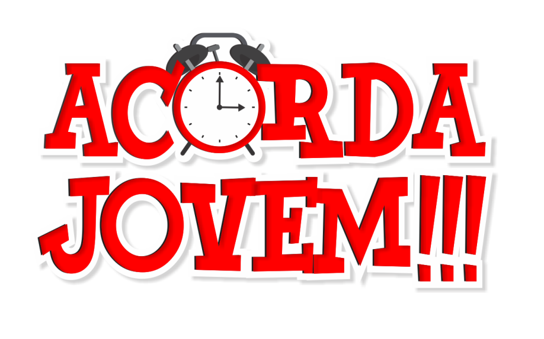

C O N V I D A D O S


90
DIAS
20
HORAS
59
MIN
02
SEG
Dias
Horas
Minutos
Segundos

É com grande alegria e expectativa que convidamos você para este momento extraordinário. Estamos prestes a embarcar em uma jornada única, impulsionada pelo poder transformador do Espírito Santo de Deus.
O Acorda Jovem é o encontro anual de Jovens da Renovação Carismática Católica, Paróquia Nossa Senhora Aparecida de Ouro Preto do Oeste. Neste encontro reunimos jovens de vários lugares, para viver uma experiência com o Amor de Deus, e ouvir dele as respostas para os anseios do coração da juventude. Louvor, pregação, adoração e muita animação, tudo isso de um jeito jovem.
Todos são bem-vindos :)
R. Sim,
⚠️ Atenção para os detalhes, conforme descrito abaixo: ⚠️
- De 01 a 04 anos:
Espaço reservado para as crianças, sob supervisão durante todo o evento. Nos horários de alimentação, intervalos ou quando for necessária higiene (como troca de roupa, entre outros), a responsabilidade será dos pais, que devem escolher assentos próximos ao local das crianças, ou seja, precisam estar participando do encontro. A inscrição é gratuita para as crianças.
- De 05 a 10 anos:
Ambiente separado, só para crianças fora do evento geral (Auditório São José), com o auxílio de tias e programação de evangelização específica para a faixa etária, (nos horários de alimentação e intervalos as crianças devem ficar com os pais); Os pais ou acompanhantes precisam estar participando do evento;
Paga inscrição (R$ 20,00 );
- De 11 a 13 anos:
Pode participar do Acorda Jovem, desde que esteja acompanhado pelos pais ou responsáveis; Paga inscrição integral(R$ 95,00);
- De 14 a 17 anos:
Precisa de termo responsabilidade assinado pelos pais ou responsáveis legais (modelo abaixo); Paga inscrição integral(R$ 95,00);
>> Termo de responsabilidade <<
- A partir de 18 anos:
Paga inscrição integral(R$ 95,00).
A participação dos dois (02) dias de evento e alimentação.
Sim, alimentação está inclusa, no dia 29/11 (Café da manhã, almoço, lanche e jantar), no dia 30/11 (Café da manhã e almoço).
Além disso, teremos outros alimentos a venda (Bolos, salgados e outros) .
Sim, para pessoas de outras cidades que vêm em caravanas, acompanhadas de uma pessoa responsável.
Bíblia, garrafinha de água, roupas e calçados confortáveis.
Para os que vêm de outras cidades, além dos itens acima, trazer:
Colchonete, roupas de cama, Itens de Higiene pessoal (escova de dentes, toalha etc.)
Sim, é possível montar sua própria caravana e trazer todos os seus amigos para o Acorda Jovem, porém, É importante lembrar que para montar uma caravana é necessário atender alguns critérios:
- Cada caravana precisa de um representante Masculino e uma representante Feminina;
- Ambos precisam ter idade maior ou igual a 18 anos;
- Assumir a responsabilidade pelos membros da caravana (organizar, informar, advertir...).
Link para cadastrar caravana
Sim, acontecerá simultaneamente o ACORDA KIDS, e nele teremos dois ambientes para as crianças, separados por idade.
- 5 a 10 Anos:
Para participar é necessário fazer a inscrição no valor de R$ 20,00 (alimentação inclusa).
O evento acontecerá no Auditório São José, próximo ao local do evento principal.
Nestes espaços o Ministério para as crianças vai promover atividades com o objetivo principal de evangelizar com a linguagem dos pequenos, e ao mesmo tempo, permitir que os pais possam aproveitar com mais facilidade o evento.
Mas atenção, alimentação e higiene da criança é responsabilidade dos pais.
>>Link para inscrição<<
O ingresso garante a entrada aos dois (02) dias de evento. Não temos outro valor para apenas um dia, mas você é livre pra escolher quando quer ir. Quer uma dica? Se organize e tente não perder nem um minuto do Acorda Jovem.
Sim, haverá Santa Missa no domingo.
A acolhida com café da manhã será a partir das 7 horas.
Não haverá reembolso. Dica: Entre em contato com a organização e passe sua inscrição para outra pessoa ;)
Não existe meia-entrada para o Acorda Jovem.
R. Castelo Branco, Jardim Tropical, Ouro Preto do Oeste - RO
(Ao fundo do Santuário Diocesano Nossa Senhora Aparecida)